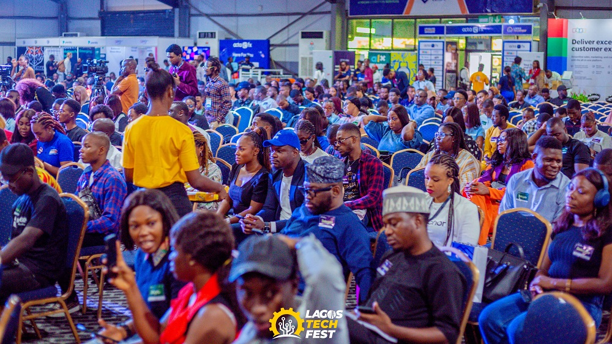
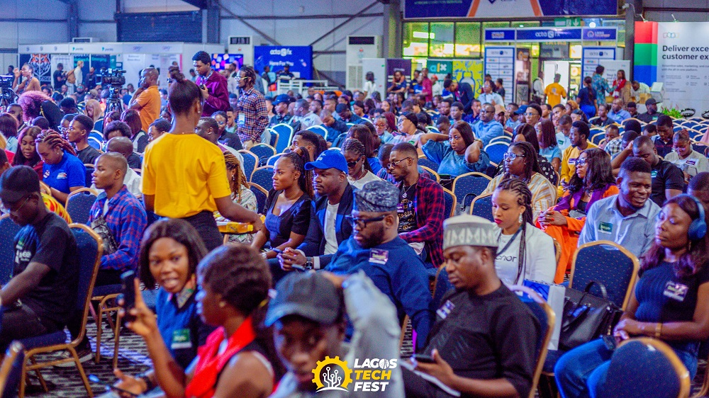

History
Our History
TechCon began in 2012 as a small meetup of developers and tech enthusiasts in Austin, Texas. Over the years, it has grown into a global conference attracting thousands of participants from over 40 countries. Previous editions have featured discussions on emerging technologies like quantum computing, AI ethics, and green tech innovation.
 
